Our Everest Base Camp trek with Namaste Hiking Trek went beyond every expectation we had. What first pulled us towards them was their strict safety protocol and personal care. From the landing at Lukla to reaching Everest Base Camp (5,364m) and Kala Patthar, Sagar and the team made sure we were comfortable, safe, and hydrated every single day!
Everest Region • Classic Himalayan Expedition
5.0
reviews on TripAdvisor
5.0
169 reviews on Google
Gokyo Lake Trek
Walk from Lukla through Namche Bazaar, Dole and Machhermo to the Gokyo Valley, with glacial lakes, the Gokyo Ri viewpoint and the Ngozumpa Glacier landscape. This 15-day draft includes acclimatization in Namche and Machhermo, a Gokyo Ri day and a return through Dole and Namche to Lukla.
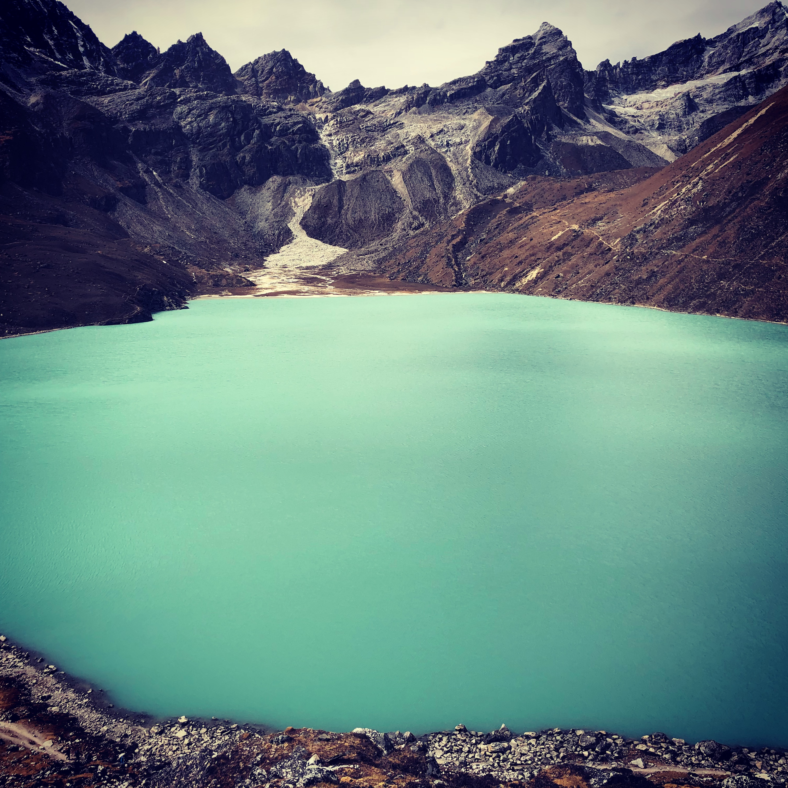
Travelers' Choice
Best of the Best 2026
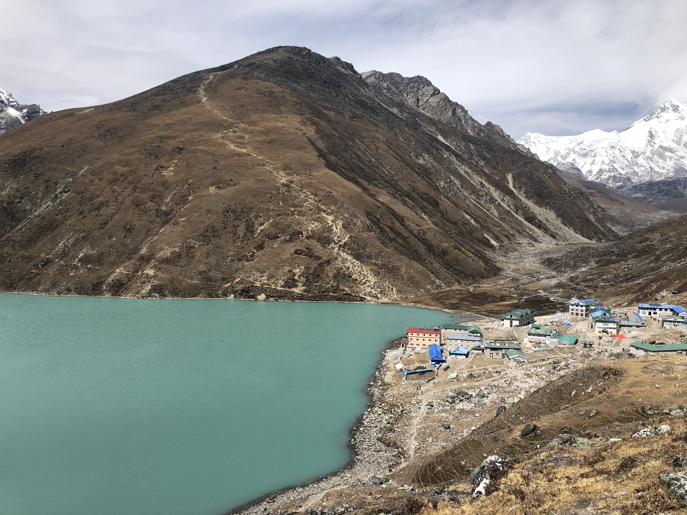
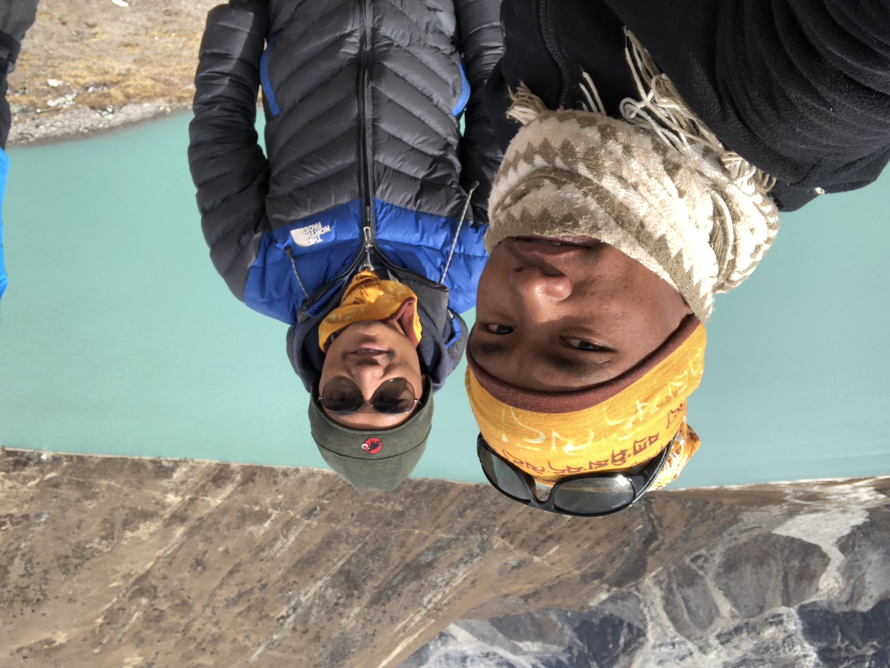
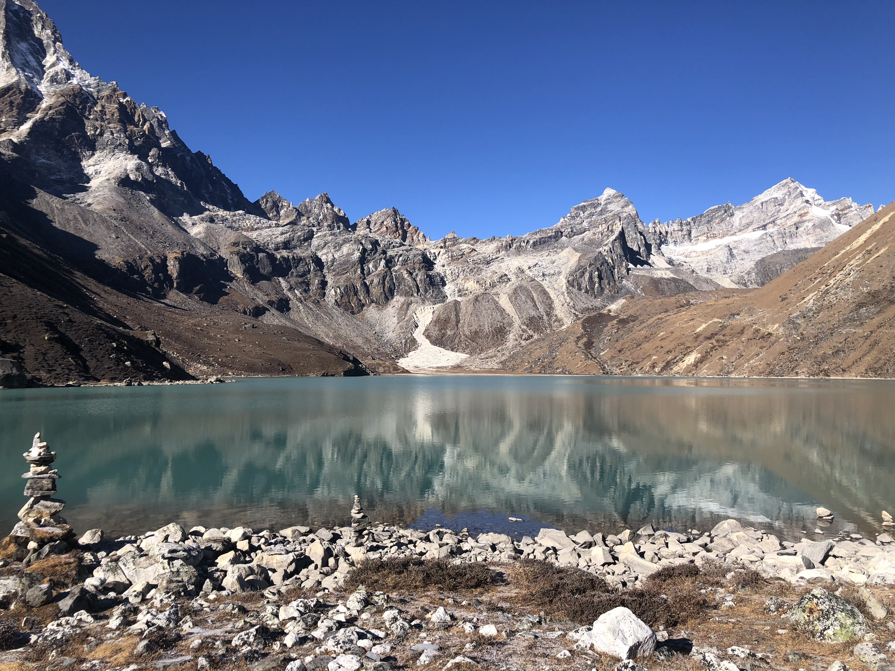
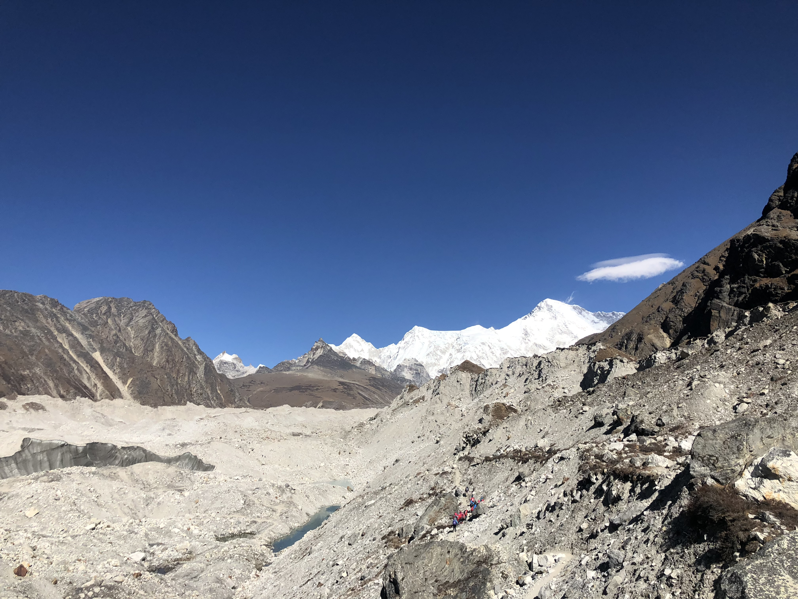
Key Trip Facts
Duration
15 calendar days (Kathmandu to departure)
Walking days
11 scheduled days (Days 3–13)
Acclimatization
Namche (Day 5) & Machhermo (Day 8)
Route beyond Namche
Dole → Machhermo → Gokyo
Highest viewpoint
Gokyo Ri, ~5,357 m (17,575 ft)
Main lake
Dudh Pokhari (3rd Lake), ~4,790 m
Main glacier
Ngozumpa Glacier (~20 km)
Highest sleep
Gokyo village, ~4,790 m (15,715 ft)
Starting/Finishing
Lukla, ~2,850 m (9,350 ft)
Style
Guided teahouse mountain trek
Best seasons
Sep–Nov (Autumn) & Mar–May (Spring)
Trek grading
Challenging altitude • Non-technical
Support team
Licensed Sherpa guide & porters
Baggage limits
Duffel bag (porter) + personal daypack
Flight buffer
Day 15 contingency / departure slot
Base route excludes
EBC, Cho La & Renjo La (unless booked)
Gokyo Lake Trek: Overview & Valley Route
The Gokyo Lake Trek is a premier high-altitude trekking route through Nepal's Khumbu region that leads from the bustling Lukla–Namche corridor into the serene, glacial sanctuary of the Gokyo Valley. Renowned across the trekking world for its chain of crystalline, turquoise glacial lakes, the breathtaking 360-degree viewpoint from Gokyo Ri (5,357 m), the colossal Ngozumpa Glacier, and warm Sherpa communities, this journey offers an intimate, tranquil alternative to the busier Everest Base Camp trail.
The trek initially follows the historic Himalayan artery used by classic Everest-region expeditions, ascending past Phakding and across suspension bridges over the Dudh Koshi into the Sherpa market hub of Namche Bazaar (3,440 m). Just north of Namche, the trail diverges at Kenjoma and Mong La, veering northwest into the pristine Dudh Koshi gorge toward Dole, Machhermo, and the alpine lake basins of Gokyo. The Nepal Tourism Board highlights Gokyo as one of the ultimate scenic mountain valleys in the Himalayas, presenting an unmatched mountain panorama featuring four of the world's six highest peaks: Cho Oyu (8,188 m), Mount Everest (8,848 m), Lhotse (8,516 m), and Makalu (8,485 m).
Key Trip Facts: Official 15-Day Source Itinerary
| Trip Fact | This Source Itinerary |
|---|---|
| Duration | 15 calendar days, including preparation and the final contingency/departure slot |
| Mountain walking/hiking days | 11 scheduled days, Days 3–13; includes two acclimatization hikes |
| Acclimatization | Namche Bazaar on Day 5 and Machhermo on Day 8 |
| Starting / finishing walking point | Lukla (2,850 m) |
| Route beyond Namche | Dole → Machhermo → Gokyo |
| Highest sleeping elevation | Gokyo village, approximately 4,790 m in the primary itinerary |
| Highest planned viewpoint | Gokyo Ri, approximately 5,357 m (17,575 ft) |
| Main lake beside village | Dudh Pokhari (Gokyo 3rd Lake), Ramsar site |
| Main glacier landscape | Ngozumpa Glacier (Himalayas' longest debris-covered glacier, ~20 km) |
| Style | Guided teahouse mountain trek |
| Best-known seasons | Spring (Mar–May) and Autumn (Sep–Nov), subject to actual conditions |
| Base route excludes | Everest Base Camp, Kala Patthar, Cho La Pass, and Renjo La Pass (unless booked as an extended circuit) |
| Contingency buffer | Day 15 serves as a built-in flight contingency buffer or onward departure day |
Where is the Gokyo Lake Trek?
The Gokyo Valley lies in the western section of the Khumbu region in northeastern Nepal. Situated entirely inside Sagarmatha National Park (a UNESCO World Heritage site), the valley is carved by the Dudh Koshi River and feeds directly from the immense Ngozumpa Glacier beneath the sixth-highest peak in the world, Mount Cho Oyu (8,188 m).
A standard journey begins at Lukla (2,850 m), ascending through Phakding along the river canyon into Namche Bazaar (3,440 m). From the outskirts of Namche, the trail climbs toward the scenic ridge of Mong La (3,975 m) before descending to Phortse Tenga and climbing steeply through rhododendron forests to Dole (4,000 m). Continuing past the yak pastures of Luza and Machhermo (4,470 m), the trail reaches the moraines of the Ngozumpa Glacier and the glacial lake basin at Gokyo (4,790 m).
What is the Trek Like? An Evolving Landscape
The landscape changes dramatically as the trek gains elevation. The lower trail between Lukla and Namche is characterized by vibrant Sherpa villages, pine and cedar forests, terraced fields, and suspension bridges strung with fluttering Buddhist prayer flags.
Above Namche, the trail becomes noticeably more alpine. Leaving the main Khumbu thoroughfare at Mong La, the path traverses forested slopes filled with birch and moss-draped rhododendrons (bursting into crimson bloom each spring). Past Dole, trees rapidly give way to alpine juniper scrub, dry scrubland, and high-altitude yak pastures.
By the time you approach Gokyo, vegetation has disappeared entirely. The terrain transitions into a rugged, windswept high-altitude lunar environment dominated by lateral moraines, shattered glacial boulders, frozen meltwater ponds, and the shimmering turquoise expanse of the sacred lakes beneath colossal snowy massifs. It is this dramatic, multi-stage environmental transition that defines the Gokyo experience.
How is Gokyo Different from Everest Base Camp?
While both treks share the common gateway from Lukla to Namche Bazaar, they offer distinctly different journeys:
| Aspect | This Gokyo Lake Plan (15 Days) | Classic Everest Base Camp Plan |
|---|---|---|
| Route Beyond Namche | Dole, Machhermo, and the Gokyo Valley | Tengboche, Dingboche, Lobuche, Gorak Shep |
| Primary Objective | Glacial lakes, Ngozumpa Glacier, and Gokyo Ri | Everest Base Camp & Kala Patthar |
| Ultimate Viewpoint | Gokyo Ri (5,357 m) — 360° view of 4 eight-thousanders (Everest, Lhotse, Makalu, Cho Oyu) | Kala Patthar (5,545 m) — Close-up view of Everest and Nuptse |
| Crowds & Trail Ambiance | Substantially quieter, serene teahouse stays, less commercial | Higher trekking traffic, busy teahouses during peak months |
| High Pass Additions | None in base route (Cho La or Renjo La optional extensions) | None in classic out-and-back route |
Who is this Route For?
This trek is crafted for mountain enthusiasts, photographers, and adventurers seeking a deeply scenic, contemplative high-Himalayan journey without the sheer volume of trail traffic found along the main Everest corridor. It is particularly rewarding for:
- Landscape Photographers: High-altitude reflections in pristine turquoise lakes framed by the towering ramparts of Cho Oyu and Everest.
- Viewpoint Seekers: Many seasoned Himalayan veterans consider the panoramic view from Gokyo Ri superior to Kala Patthar because it reveals a wider horizon containing four 8,000-meter peaks.
- Paced Trekkers & Beginners: With two dedicated acclimatization stages (Namche Day 5 and Machhermo Day 8), this 15-day profile provides conservative altitude staging that allows well-prepared hikers of good fitness to succeed safely.
Safety Note: Gokyo should not be marketed as an "easy" walk compared to Everest Base Camp. Sleeping at 4,790 m and climbing to 5,357 m in sub-zero temperatures requires cardiovascular fitness, disciplined pacing, and vigilant altitude awareness.
Gokyo Lake Trek Highlights
Sacred Turquoise Lakes
Discover the world's highest freshwater lake system. Gaze upon Dudh Pokhari and Longponga Cho, recognized globally as a Ramsar Wetland of International Importance and revered by both Buddhist and Hindu communities.
Gokyo Ri Summit (5,357 m)
Ascend to the summit of Gokyo Ri for a peerless 360-degree panoramic spectacle revealing Mount Everest, Lhotse, Makalu, and Cho Oyu, with the deep turquoise lakes glittering directly below.
Ngozumpa Glacier Moraine
Witness Nepal's largest glacier, stretching ~20 km from Cho Oyu. Marvel at its vast debris-covered moraine ridges, massive ice cliffs, meltwater ponds, and active glacial geology.
Authentic Sherpa Culture
Experience genuine hospitality in high-altitude Sherpa villages, explore historic stone monasteries and ancient mani walls, and stay in traditional family-run mountain teahouses.
Two Acclimatization Stays
Benefit from a conservative, doctor-approved acclimatization schedule with dedicated rest and hiking days in Namche Bazaar (3,440 m) and Machhermo (4,470 m).
Upper Lakes Exploration
Opportunity for seasoned hikers to extend their valley journey toward the 4th (Thonak Cho) and 5th (Ngozumpa Cho) lakes beneath the sheer southern face of Mount Cho Oyu.
Highlights at a Glance: Planned Stages
| Experience | Planned Stage |
|---|---|
| Lukla flight and Dudh Koshi river-valley approach | Days 3–4 (Lukla → Phakding → Namche Bazaar) |
| Namche Bazaar acclimatization hike | Day 5 (Hike toward Syangboche / Everest View Hotel, ~3,900 m) |
| Mong La ridge traverse and descent to Dole | Day 6 (Namche → Mong La → Phortse Tenga → Dole) |
| Machhermo alpine valley and acclimatization | Days 7–8 (Dole → Machhermo, 4,470 m with daytime acclimatization walk) |
| Gokyo village arrival and Dudh Pokhari lakes | Day 9 (Terminal moraine → First lakes → Gokyo 3rd Lake, 4,790 m) |
| Gokyo Ri summit sunrise & valley exploration | Day 10 (Ascent of Gokyo Ri, 5,357 m, optional 4th/5th lake hike) |
| Scenic return descent through Dole, Namche and Lukla | Days 11–13 (Gokyo → Dole → Namche Bazaar → Lukla) |
Why Book This Trek with Namaste Hiking Trek?
Trekking into the remote Gokyo Valley requires experienced field coordination, uncompromising safety protocols, and deep local relationships. Here is how Namaste Hiking Trek ensures a smooth, memorable, and safe journey:
Veteran Licensed Sherpa Leaders
Led exclusively by government-licensed, English-speaking Sherpa guides with minimum 6–8 years of high-altitude Khumbu leadership experience, certified in wilderness first aid and high-altitude risk management.
Twice-Daily Health & Oximeter Checks
Your guide carries a medical-grade pulse oximeter and comprehensive first-aid kit, conducting mandatory blood oxygen saturation (SpO2) and pulse checks every morning and evening to ensure safe acclimatization.
Complimentary Gear & Duffle Bag
Every trekker receives a complimentary heavy-duty waterproof trekking duffle bag (80–100L) yours to keep, plus free rental of an expedition four-season sleeping bag (-20°C) and down jacket upon request.
24/7 Operations & Helicopter Rescue Link
Backed by our Kathmandu emergency dispatch center with direct satellite coordination to Nepal's premier helicopter operators and international travel insurance assistance networks for immediate medical response.
Planning your Gokyo Lake Trek?
Chat directly with our veteran Sherpa leaders — real field experts, not call-center bots.
Direct WhatsApp replies within 1–2 hours
15-Day Detailed Itinerary
Follow the day-by-day expedition route from Kathmandu through Lukla, Namche Bazaar, Dole, and Machhermo to the sacred turquoise lakes of Gokyo, the summit of Gokyo Ri, and the vast Ngozumpa Glacier moraine.
Day 1
Arrival in Kathmandu & Transfer to Hotel
Duration
45 min transfer
Max Elevation
1,400 m / 4,593 ft
Elevation Gain/Loss
Arrival
Meal Plan
Dinner Included
Overnight
Hotel in Kathmandu (Thamel)
Your Gokyo Lake Trek begins in Kathmandu, where the first day is focused on international arrival, recovery, and preparation rather than trekking. After landing at Tribhuvan International Airport (KTM) and completing customs formalities, meet our representative holding the Namaste Hiking Trek placard outside the arrival terminal and transfer to your hotel in Thamel. Depending on your arrival time, use the remainder of the day for resting after your long flight, exploring the colorful shops of Thamel, or enjoying authentic Nepali hospitality. In the evening, gather for a comprehensive pre-trek briefing with your lead Sherpa guide covering the Gokyo route, daily walking expectations, altitude progression, teahouse life, weather considerations, and safety protocols.

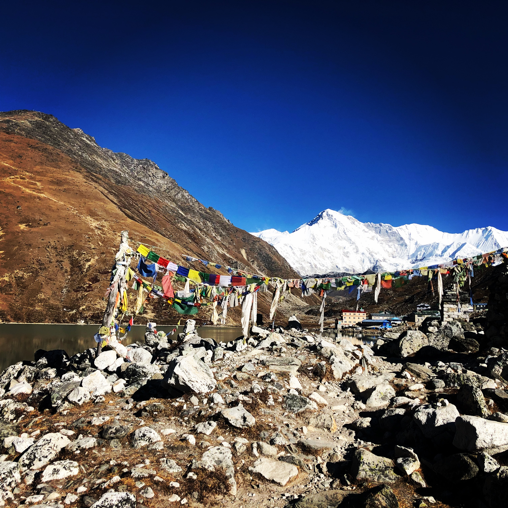


Day 2
Kathmandu Preparation, Equipment Check & Trek Briefing
Duration
Full day prep
Max Elevation
1,400 m / 4,593 ft
Elevation Gain/Loss
0 m
Meal Plan
Breakfast Included
Overnight
Hotel in Kathmandu
The second Kathmandu day provides vital preparation time before entering the Everest region. Your guide will conduct a thorough gear inspection to ensure your boots, thermal base layers, four-season sleeping bag, down jacket, and daypack are well suited for high-altitude conditions. Missing items can be rented or purchased affordably in Thamel. This is also the ideal time to exchange currency for Nepalese rupees (cash is essential for mountain hot showers, Wi-Fi, and charging), arrange personal medication, and pack your complimentary Namaste Hiking Trek waterproof duffle bag (porter weight limit: 10–12 kg per trekker). Your guide will reconfirm current flight arrangements (checking whether your flight departs from Kathmandu Tribhuvan Airport or requires an early road transfer to Ramechhap/Manthali Airport during peak season). Enjoy a peaceful evening resting before tomorrow's mountain flight.

Day 3
Fly to Lukla & Trek through the Dudh Koshi Valley to Phakding
Duration
3–4 hrs trek (20–40 min flight)
Max Elevation
2,610 m / 8,563 ft (Lukla: 2,850 m)
Elevation Gain/Loss
-240 m net (after flight)
Meal Plan
Breakfast, Lunch & Dinner
Overnight
Mountain Lodge in Phakding
The mountain adventure officially begins with a thrilling morning flight to Tenzing-Hillary Airport in Lukla (2,850 m), the world's most famous mountain airstrip. Marvel at the dramatic peaks as the Twin Otter aircraft glides onto the mountainside runway. After meeting your supporting Sherpa porters and organizing luggage, start the trek descending gently along the Dudh Koshi ("Milk River") valley. The trail meanders through fragrant pine and rhododendron woodlands, crossing suspension bridges decorated with prayer flags and passing engraved Buddhist mani stone walls. Arrive in the scenic riverside village of Phakding (2,610 m). Because Phakding lies slightly lower than Lukla, this short introductory stage provides an ideal, gentle transition into the rhythm of Himalayan trekking without accumulating unnecessary physical fatigue.


Day 4
Trek Phakding to Namche Bazaar via Hillary Suspension Bridge
Duration
5–7 hrs trek (10–12 km)
Max Elevation
3,440 m / 11,286 ft
Elevation Gain/Loss
+830 m
Meal Plan
Breakfast, Lunch & Dinner
Overnight
Mountain Lodge in Namche Bazaar
Today is the first major physical stage of the journey. Following the Dudh Koshi gorge northward, cross multiple spectacular suspension bridges, passing through the villages of Benkar and Chumoa before reaching Monjo, the official checkpoint for Sagarmatha National Park entry. After registering permits, enter the park and descend to Jorsale for lunch beside the confluence of the Bhote Koshi and Dudh Koshi. From here, cross the famous high Hillary Suspension Bridge draped in hundreds of colorful prayer flags, then begin the sustained, switchbacking forest climb to Namche Bazaar. On clear afternoons, the trail reveals your first breathtaking glimpse of Mount Everest framed by Lhotse. Maintain a steady, measured pace. Arrive at the natural horseshoe amphitheater of Namche Bazaar (3,440 m), the vibrant cultural and commercial capital of the Sherpa people.

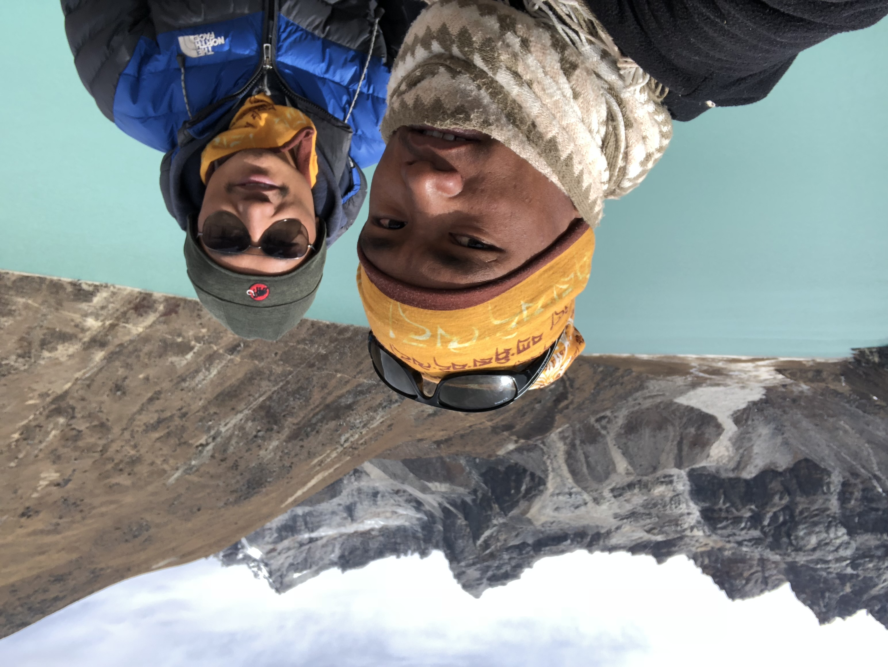
Day 5
Acclimatization Day in Namche Bazaar (Hike to 3,900 m)
Duration
4–5 hrs hike
Max Elevation
3,440 m / 11,286 ft (Hike to ~3,900 m)
Elevation Gain/Loss
+460 m / -460 m
Meal Plan
Breakfast, Lunch & Dinner
Overnight
Mountain Lodge in Namche Bazaar
Today is an active acclimatization day following the golden mountaineering rule: "Climb high, sleep low." Take an invigorating uphill hike above the Namche bowl to the Syangboche airstrip and onward to the famous Everest View Hotel (~3,880 m). From the hotel's panoramic terrace, savor hot tea while admiring a jaw-dropping skyline that includes Mount Everest, Nuptse, Lhotse, Ama Dablam, Thamserku, and Kongde Ri. You may extend the walk to the picturesque Sherpa villages of Khumjung and Khunde to visit the historic Khumjung Monastery (which houses a preserved Yeti scalp relic) and the Hillary Memorial School. Return to Namche Bazaar for lunch. Spend the afternoon exploring local bakeries, Sherpa cultural museums, or browsing gear shops. This active altitude exposure prompts your body to generate more oxygen-carrying red blood cells, which is essential before pushing higher into the Gokyo Valley.
Day 6
Trek Namche Bazaar to Dole via Mong La Ridge
Duration
5–6 hrs trek (10–12 km)
Max Elevation
4,000–4,200 m / 13,123 ft
Elevation Gain/Loss
+660 m
Meal Plan
Breakfast, Lunch & Dinner
Overnight
Mountain Lodge in Dole
Leaving Namche Bazaar, follow the scenic high trail contouring the mountainside with sweeping views of Ama Dablam, Everest, and Thamserku. At the trail junction of Sanasa, bid farewell to the classic Everest Base Camp crowd as our route turns northwest, climbing a steep stone staircase toward the windswept ridge of Mong La (3,975 m). Mong La offers an inspiring vantage point over Phortse village and the deep Dudh Koshi canyon. From the pass, descend through rhododendron and birch forest to the riverside hamlet of Phortse Tenga (3,680 m) for lunch. The afternoon involves a sustained, steady climb out of the river valley through lush forests of birch, conifers, and rhododendrons (which shelter Himalayan musk deer and monal pheasants) until emerging onto the alpine plateau of Dole (4,000 m). Dole is significantly higher than Namche, so take the final ascent slowly and hydrate well.
Day 7
Trek Dole to Machhermo through High Alpine Pastures
Duration
3–4 hrs trek (6 km)
Max Elevation
4,470 m / 14,665 ft
Elevation Gain/Loss
+470 m
Meal Plan
Breakfast, Lunch & Dinner
Overnight
Mountain Lodge in Machhermo
Today is deliberately designed as a shorter walking stage, allowing your body to adapt smoothly to the thinning air above 4,000 meters. The trail climbs gently out of Dole, leaving the last stands of stunted birch trees behind as you enter an expansive alpine landscape dominated by juniper bushes and alpine scrub. The trail contours high above the Dudh Koshi gorge, offering majestic vistas of Cho Oyu (8,188 m), Kantega, and Thamserku. Pass through the summer yak-herding kharkas of Lhabarma and Luza before dropping into the sheltered valley of Machhermo (4,470 m). Machhermo is famously known in mountaineering lore as the site of a reported Yeti encounter in 1974. Check into your lodge by early afternoon, savor a warm lunch, and spend the rest of the day resting, reading, and hydrating.
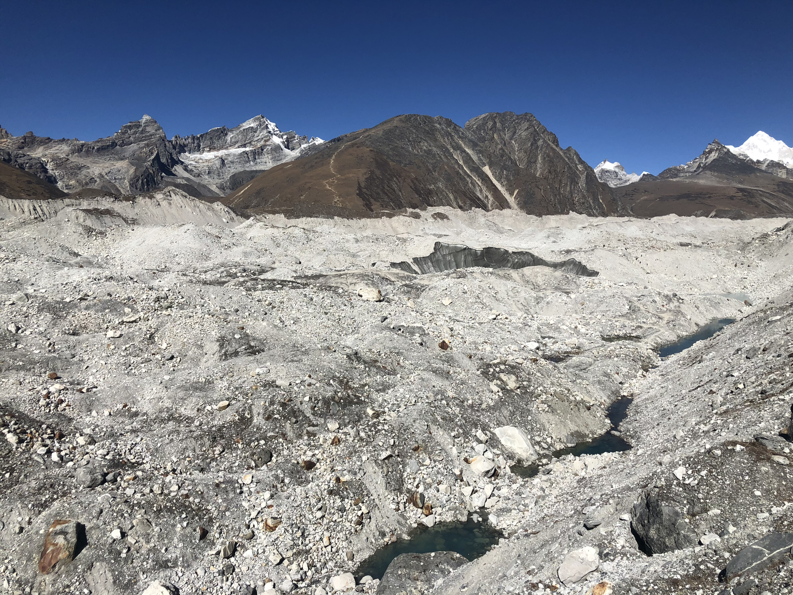
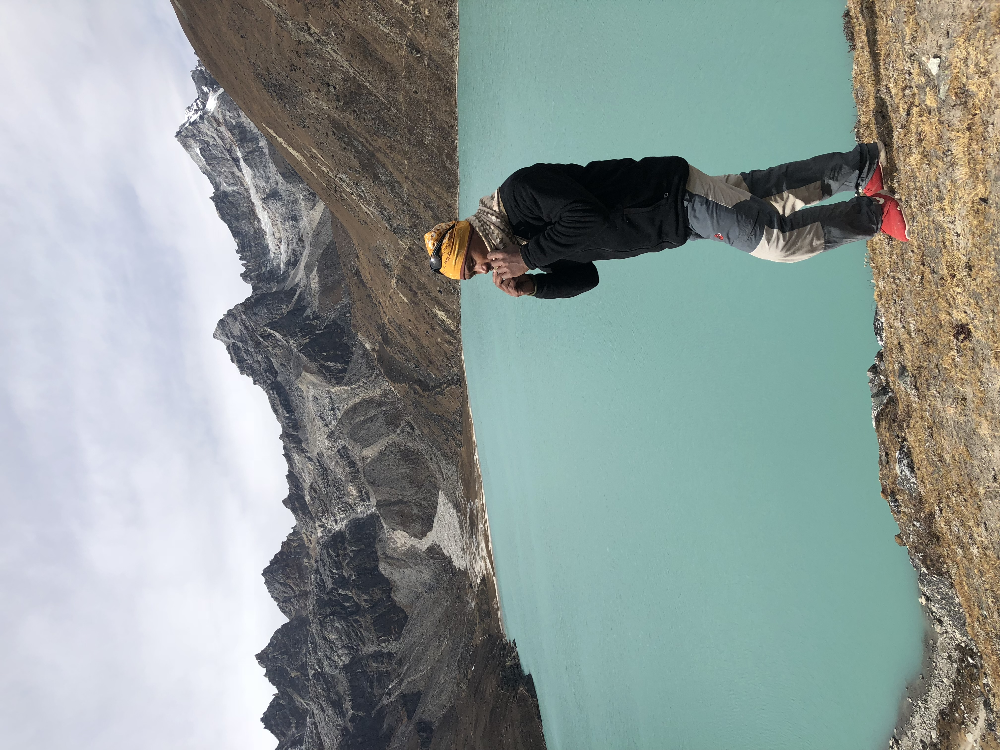
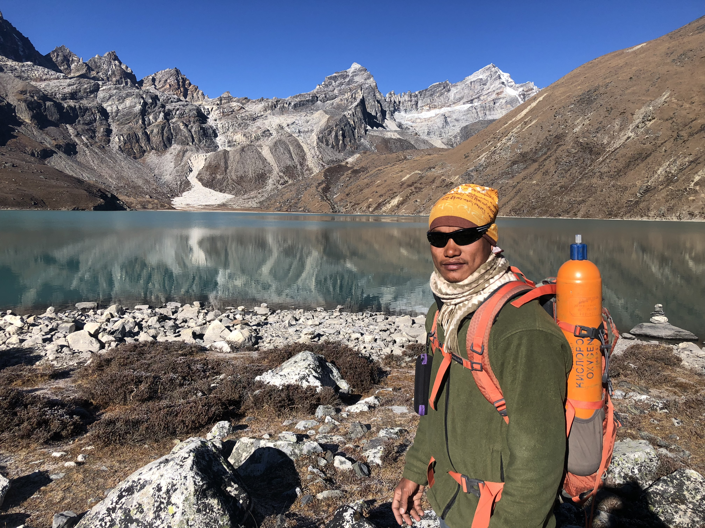
Day 8
Dedicated Acclimatization Day in Machhermo (4,470 m)
Duration
2–4 hrs hike
Max Elevation
4,470 m / 14,665 ft (Ridge hike to ~4,700 m)
Elevation Gain/Loss
+230 m / -230 m
Meal Plan
Breakfast, Lunch & Dinner
Overnight
Mountain Lodge in Machhermo
This second acclimatization day is a signature safety feature of our 15-day itinerary that sets it apart from rushed 11-day programs. Spending an extra night at 4,470 m ensures your respiratory and cardiovascular systems are fully adapted before sleeping at 4,790 m in Gokyo. In the morning, embark on an easy, controlled acclimatization hike up the ridgeline behind Machhermo. At the top of the ridge, you are rewarded with awe-inspiring views of Kyajo Ri, Cho Oyu, and the rugged walls of the valley. Return to the lodge for a hearty hot lunch. In the afternoon, you may attend the daily high-altitude medical lecture presented by volunteer physicians at the Himalayan Rescue Association (HRA) post (during active trekking seasons), learning about AMS prevention and pulse oximetry. Use the evening to rest thoroughly and prepare for tomorrow's entry into the Gokyo lake basin.
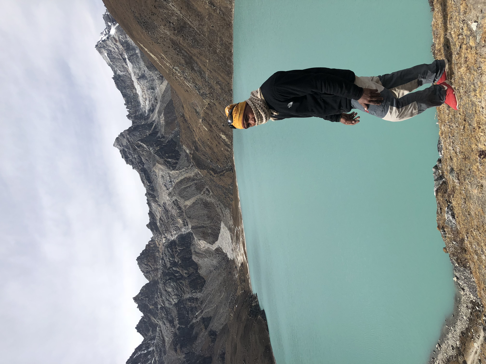
Day 9
Trek Machhermo to Gokyo Village via the First and Second Lakes
Duration
4–5 hrs trek (5–6 km)
Max Elevation
4,790 m / 15,715 ft
Elevation Gain/Loss
+320 m
Meal Plan
Breakfast, Lunch & Dinner
Overnight
Mountain Lodge in Gokyo Village
Today is an unforgettable highlight as you enter the high glacial valley of Gokyo. The trail climbs out of Machhermo through Pangkha, where the trail begins crossing the massive terminal moraine of the Ngozumpa Glacier. Navigate a steep stone staircase adjacent to the roaring meltwater torrent of the Dudh Koshi. Suddenly, the terrain levels out and the first of the sacred lakes, Longponga Cho (4,690 m), comes into view, nestled beneath sheer granite walls. Follow the lakeside trail across a boulder-strewn moraine to the second lake, Taujon Cho (4,740 m), where ducks and waterfowl often swim in the crystal waters. Continuing alongside the lateral moraine, the trail reaches the third and principal lake: the radiant turquoise jewel of Dudh Pokhari (4,790 m). Perched right on the lake's eastern shore beneath the shadow of Gokyo Ri sits the picturesque village of Gokyo. Check into your lodge, warm up by the dining room stove, and gaze in wonder at the dramatic mountain reflections shimmering across the water.
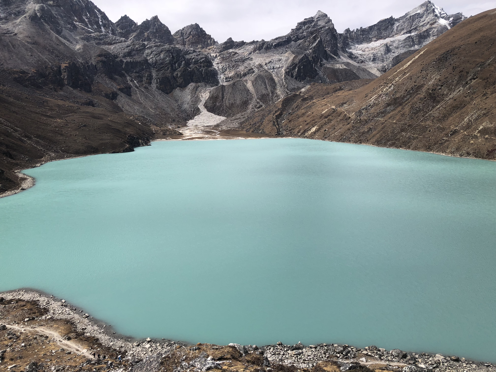
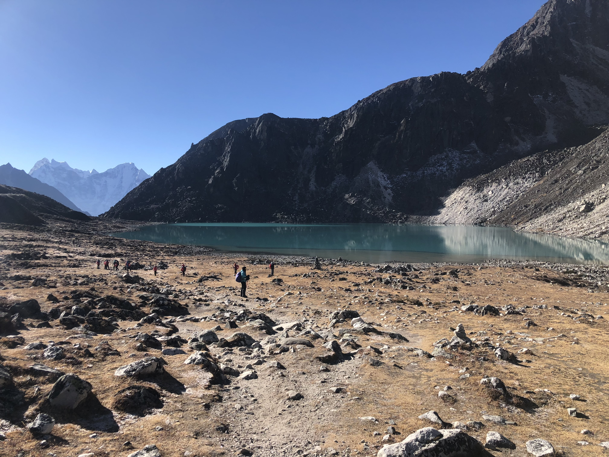
Day 10
Pre-Dawn Climb to Gokyo Ri (5,357 m) & Valley / Upper Lakes Exploration
Duration
5–7 hrs total (2–3 hrs ascent to Gokyo Ri)
Max Elevation
5,357 m / 17,575 ft (Gokyo: 4,790 m)
Elevation Gain/Loss
+567 m / -567 m
Meal Plan
Breakfast, Lunch & Dinner
Overnight
Mountain Lodge in Gokyo Village
Wake before dawn around 5:00 a.m. for the pinnacle achievement of the trek: the ascent of Gokyo Ri (5,357 m / 17,575 ft). Equipped with headlamps, trekking poles, and warm layers, begin the steep, non-technical zig-zagging climb directly from the village up the rocky western ridge. As dawn breaks, golden alpine light floods the Khumbu, revealing a stupendous 360-degree panorama: four 8,000-meter giants—Mount Everest (8,848 m), Lhotse (8,516 m), Makalu (8,485 m), and Cho Oyu (8,188 m)—tower over the jagged ice world. Directly below lies the entire chain of Gokyo lakes gleaming turquoise in the morning sun, alongside the sinuous, massive moraine of the Ngozumpa Glacier. After capturing celebratory photographs at the prayer-flag-strewn summit, descend to Gokyo for a well-deserved breakfast. In the afternoon, rest or undertake an optional excursion northward along the glacier moraine toward the fourth lake (Thonak Cho, 4,870 m) and fifth lake (Ngozumpa Cho, 4,990 m) beneath the massive south face of Cho Oyu. Overnight in Gokyo.
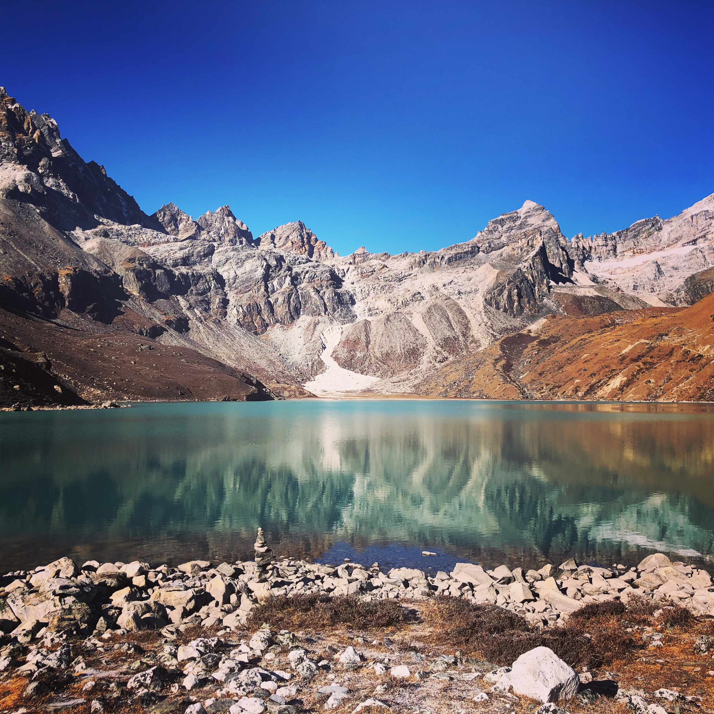
Day 11
Trek Gokyo to Dole via Machhermo
Duration
5–6 hrs trek (12–13 km)
Max Elevation
4,000–4,200 m / 13,123 ft
Elevation Gain/Loss
-790 m
Meal Plan
Breakfast, Lunch & Dinner
Overnight
Mountain Lodge in Dole
After breakfast, say farewell to the magical lakes of Gokyo and begin the return journey. Retrace your steps along the lateral moraine of the Ngozumpa Glacier, passing the first and second lakes before descending the stone steps toward Pangkha. With gravity now on your side and oxygen levels steadily increasing, breathing becomes noticeably easier, though trekking poles are strongly recommended to cushion the knees on descent. Pass through Machhermo and continue contouring across the high alpine pastures above the Dudh Koshi. The stark glacial wilderness gradually softens into heather, juniper scrub, and dwarf rhododendron bushes as you descend to the familiar teahouse settlement of Dole (4,000 m). Enjoy a relaxing evening in the warmth of the lodge dining room.
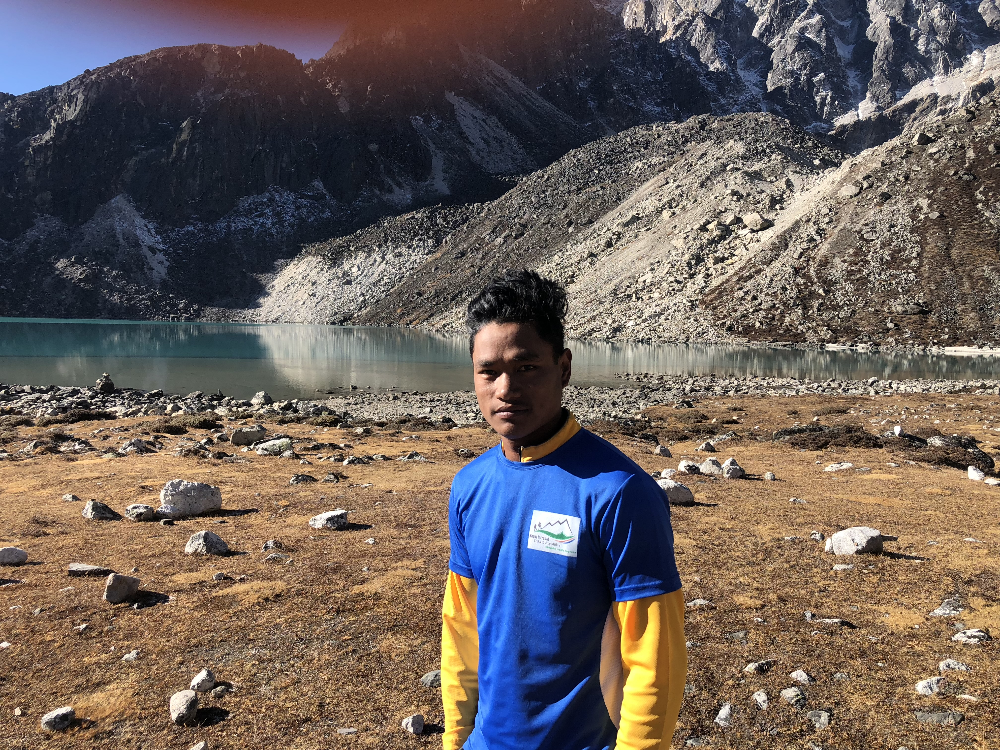
Day 12
Trek Dole to Namche Bazaar via Phortse Tenga and Mong La
Duration
5–6 hrs trek (12–13 km)
Max Elevation
3,440 m / 11,286 ft
Elevation Gain/Loss
+295 m / -855 m
Meal Plan
Breakfast, Lunch & Dinner
Overnight
Mountain Lodge in Namche Bazaar
The descent continues through the lower Gokyo corridor. From Dole, descend steeply through rhododendron and birch forest to Phortse Tenga (3,680 m) on the riverbank. Cross the bridge and embark on the steady uphill climb back to the picturesque hilltop stupa of Mong La (3,975 m), where you can pause for tea while admiring final sweeping vistas of Ama Dablam and Thamserku. From Mong La, a gentle downhill traverse brings you back to the main trail junction at Sanasa and Kyanjuma. The wide, paved trail contours around the ridge before leading into Namche Bazaar (3,440 m). After several days in remote high-altitude lodges, returning to Namche feels like stepping back into civilization. Celebrate your successful summit with fresh coffee, apple pie at the local German Bakery, and a hot shower.
Day 13
Trek Namche Bazaar to Lukla via Monjo & Phakding
Duration
6–8 hrs trek (18–19 km)
Max Elevation
2,850 m / 9,350 ft
Elevation Gain/Loss
-590 m net
Meal Plan
Breakfast, Lunch & Dinner
Overnight
Mountain Lodge in Lukla
Today is the final day on the trekking trail. Depart Namche early, descending the steep forested switchbacks toward the Hillary Suspension Bridge. Cross the roaring Dudh Koshi, exit Sagarmatha National Park at Monjo, and continue down the valley past Phakding, stopping for lunch along the river. The final stretch from Phakding to Lukla involves a gradual uphill climb that provides a satisfying final physical workout. Enter the gateway town of Lukla (2,850 m) through the Pasang Lhamu Memorial Gate. Settle into your lodge and join your guide, porters, and fellow trekkers for a celebratory farewell dinner. This is the customary evening to present well-deserved tips to your dedicated Sherpa crew and reminisce over the unforgettable vistas of Gokyo Ri and the glacial lakes.
Day 14
Fly Lukla to Kathmandu (or Ramechhap) & Hotel Transfer
Duration
20–40 min flight
Max Elevation
1,400 m / 4,593 ft
Elevation Gain/Loss
-1,450 m
Meal Plan
Breakfast Included
Overnight
Hotel in Kathmandu (Thamel)
Board your scheduled early-morning flight from Lukla back to Kathmandu (or Ramechhap/Manthali with onward private ground transfer to Kathmandu, depending on seasonal civil aviation operations). Catch your final breathtaking aerial views of the snow-capped Himalayan wall from the airplane window. Upon arrival in Kathmandu, transfer directly to your hotel. After the cold nights and basic plumbing of the high Khumbu, a long hot shower, comfortable mattress, high-speed Wi-Fi, and extensive restaurant menus are pure luxury. Spend the afternoon relaxing, shopping for souvenirs (pashminas, thangkas, spices, and singing bowls) in Thamel, or visiting Kathmandu's UNESCO World Heritage sites such as Swayambhunath (Monkey Temple) or Boudhanath Stupa. In the evening, join Namaste Hiking Trek for a farewell celebration dinner.
Day 15
Contingency Buffer Day or International Departure
Duration
Flexible schedule
Max Elevation
1,400 m / 4,593 ft
Elevation Gain/Loss
Departure
Meal Plan
Breakfast Included
Overnight
Onward Flight
The final day of our 15-day itinerary serves as an essential contingency buffer. High mountain flights into and out of Lukla are strictly visual (VFR) and subject to weather delays caused by mountain mist, cloud, or crosswinds. If flight delays occur earlier in the itinerary, this built-in buffer absorbs the disruption without jeopardizing your international flight home. If your flights operated smoothly on schedule, enjoy a leisurely final day in Kathmandu: explore historic Patan Durbar Square, indulge in an Ayurvedic massage, or pick up last-minute souvenirs in Thamel. At the appointed time (typically 3 hours prior to your scheduled flight departure), our private transfer vehicle will escort you to Tribhuvan International Airport for your flight home, carrying memories of the turquoise lakes of Gokyo and the summit of Gokyo Ri to last a lifetime.
What's Included & Excluded: Gokyo Lake Trek
At Namaste Hiking Trek, we maintain strict commercial clarity with transparent, written service schedules. Below is the verified breakdown of all package inclusions and personal exclusions for our 15-day Gokyo Lake expedition.
What's Included in the 15-Day Package
Airport Transfers
Private airport pick-up upon arrival and drop-off upon departure at Kathmandu Tribhuvan International Airport.
Kathmandu Hotel Accommodation
2 nights quality hotel accommodation in Kathmandu (pre and post-trek) with daily breakfast included.
Lukla Domestic Flights & Transfers
Round-trip domestic flights (Kathmandu/Ramechhap to Lukla and Lukla to Kathmandu/Ramechhap), including any required private road transfers to/from Ramechhap.
Mountain Teahouse Accommodation
12 nights accommodation in authentic mountain teahouses and trekking lodges along the Gokyo route (twin-share basis).
Full Board Meals on Trek
All meals during the trekking days: 13 breakfasts, 11 lunches, and 11 dinners with tea/coffee included at meal times.
Fresh Seasonal Fruit
Fresh seasonal fruits served after dinner each evening during the trek for vital nutrition and morale.
Licensed Sherpa Trekking Guide
Government-licensed, English-speaking Sherpa guide certified in wilderness first aid and high-altitude mountain leadership.
Dedicated Porter Support
Strong, reliable local Sherpa porters (1 porter for 2 trekkers, carrying up to 20–24 kg total / 10–12 kg per client) with fair wages and insurance.
All Permits & TIMS Registration
Sagarmatha National Park entry permit, Khumbu Pasang Lhamu Rural Municipality entry permit, and TIMS card registration fees.
Gear & 24/7 Safety Tracking
Namaste Hiking Trek waterproof duffle bag (yours to keep), free four-season sleeping bag and down jacket rental upon request, pulse oximeter monitoring, and 24/7 Kathmandu dispatch tracking.
What's Excluded from the Package Price
International Airfare & Visa
International flights to and from Kathmandu and Nepal entry visa fees ($30 for 15 days, $50 for 30 days, payable upon arrival).
Mandatory Travel Insurance
Travel and medical insurance that explicitly covers high-altitude trekking and emergency helicopter rescue up to 6,000 meters.
Kathmandu Lunches & Dinners
Lunches and dinners in Kathmandu (allowing you freedom to explore the vibrant culinary scene in Thamel).
Personal Trekking Equipment
Personal hiking boots, thermal layers, daypack, trekking poles, and personal first-aid supplies.
Teahouse Amenities & Personal Services
Hot showers (approx. $3–$6), electronic device battery charging ($2–$5), Wi-Fi scratch cards, and laundry services.
Beverages & Snacks
Bottled mineral water, boiled drinking water, soft drinks, beer, spirits, specialty espresso coffees, and snacks along the trail.
Crew Tipping & Gratuities
Tips for your lead Sherpa guide, assistant guides, and porters (customarily $150–$200 total per trekker for a 15-day journey).
Optional Route Extensions
High pass crossings (Cho La Pass, Renjo La Pass), private helicopter excursions, or separate upper-lake guide extensions.
Unforeseen Delays & Emergencies
Extra nights, replacement meals, or alternative transportation caused by mountain flight cancellations, weather, road closures, or personal illness.
Commercial Clarity & Contingency Advisory
Scheduled Flights vs. Contingency Flights: Our package includes standard scheduled domestic mountain flights between Lukla and Kathmandu (or Ramechhap during seasonal operations). Flights in the Everest region are strictly visual (VFR) and subject to weather delays. Day 15 is built into this itinerary as a flexible buffer. If emergency helicopter evacuation is required due to acute altitude illness, costs are settled through your travel insurance provider, not the trek package price. Optional route extensions (such as crossing the Cho La Pass toward Everest Base Camp or the Renjo La Pass into Thame) must be requested in advance and confirmed in writing with an updated quotation.
Booking Dates & Availability for EBC trek
05
AUG
Aug 5 – Aug 18, 2026
AVAILABLE$1,499 pp
09
AUG
Aug 9 – Aug 22, 2026
AVAILABLE$1,499 pp
13
AUG
Aug 13 – Aug 26, 2026
AVAILABLE$1,499 pp
17
AUG
Aug 17 – Aug 30, 2026
AVAILABLE$1,499 pp
21
AUG
Aug 21 – Sep 3, 2026
AVAILABLE$1,499 pp
Packing List for Gokyo Lake Trek (70 Items)
Packed: 0 / 70
Trekking into the high Gokyo Valley requires a well-structured layering system and disciplined weight management. Your porter carries your main waterproof duffle bag (up to 10–12 kg), while you carry your daypack (5–7 kg) containing layers, water, medication, camera, and valuables. Below is our comprehensive 70-item interactive checklist adapted to Gokyo's alpine conditions.
- Ergonomic daypack (30–35L) with supportive hip belt
- Heavy-duty waterproof duffel bag (80–100L, provided by Namaste Hiking Trek)
- High-visibility daypack rain cover
- Waterproof roll-top dry bags or heavy internal plastic liners
- Sturdy, broken-in high-ankle trekking boots with Vibram soles
- Comfortable lodge shoes (sandals, running shoes, or down booties)
- Adjustable lightweight trekking poles with carbide tips
- Bright LED headlamp (300+ lumens) with spare rechargeable batteries
- Category 3 or 4 UV-protective polarized sunglasses (essential for glacial glare)
- Two 1-liter reusable wide-mouth water bottles (Nalgene) or insulated flasks
- Lightweight microspikes or seasonal traction cleats (if advised by guide)
6 Tactical Directives: High-Altitude Packing for Gokyo
1. Non-Technical Route Reality
The standard Gokyo Lake Trek and Gokyo Ri ascent are non-technical trekking routes. You do not need ropes, climbing harnesses, ice axes, or heavy plastic mountaineering boots under normal conditions.
2. Seasonal Traction & Microspikes
During late autumn, winter, or early spring, packed snow or hard ice can form across shaded moraine trails near Gokyo. Lightweight elastic slip-on microspikes provide invaluable traction and safety.
3. Daypack Weight Discipline
Keep your daily daypack weight strictly between 5 and 7 kg. At 4,500+ meters, every extra kilogram significantly increases cardiovascular strain and fatigue. Carry only immediate essentials.
4. What NOT to Pack
Leave heavy hardcover books, multiple bulky cotton jeans, excessive toiletry bottles, hair styling appliances, redundant electronic gadgets, and excess clothing in secure luggage storage at your Kathmandu hotel.
5. Strategic Daypack Accessibility
Pack strategically: keep your water bottle, wind/rain jacket, sun hat, UV sunglasses, and lip balm in exterior or top pockets for instant access without having to dig through your bag on the trail.
6. Dual Internal Waterproofing
Even with water-resistant duffels and rain covers, mountain storms can penetrate seams. Line the interior of your main duffel bag and daypack with heavy-duty dry sacks or thick trash bags to keep sleeping bags and down dry.
Read Before You Book: 16 In-Depth Gokyo Guides
Essential pre-trip intelligence on mountain teahouse standards, nutrition, Ramsar wetland sanctity, Gokyo Ri sunrise ascent, Ngozumpa Glacier moraines, physical preparation, acclimatization safety, flight operations, and permits.
LODGE & TEAHOUSE
Mountain Teahouses & Accommodation Standards
Trekking in the Khumbu follows the traditional Himalayan teahouse system. A teahouse is a family-run mountain lodge offering a communal heated dining hall and basic private bedrooms (typically twin-share with two wooden single beds, foam mattresses, clean sheets, and pillows). In Namche Bazaar, lodges offer modern amenities such as en-suite bathrooms, electric blankets, and bakery cafes. Higher up the Gokyo Valley—in Dole, Machhermo, and Gokyo village—infrastructure becomes progressively simpler. Rooms are unheated; the central dining room stove (fueled by dried yak dung or wood pellets) is lit each evening around 4:30–5:00 p.m., serving as the cozy social hub of the lodge. At Gokyo (4,790 m), facilities are functional and clean, with shared Asian-style squat or Western toilets on each floor. Hot showers (gas or solar-heated) are available for an extra charge of NPR 400–700 ($3–$6). We provide four-season sleeping bags rated to -15°C/-20°C to ensure you stay warm and comfortable through frosty alpine nights.
FOOD & NUTRITION
Teahouse Food, Meal Choices & Dietary Options
Mountain teahouse kitchens serve a satisfying blend of traditional Nepali staples, Tibetan specialties, and familiar international comfort dishes. The undisputed champion of trekking nutrition is Dal Bhat: a steaming plate of steamed white or brown rice, aromatic lentil soup, spiced vegetable curry, sautéed greens (saag), and spicy pickled chutney. Dal Bhat is freshly prepared, nutritious, easily digestible, and comes with free refills ("Dal Bhat Power, 24 Hour!"). Other common menu choices include vegetable and egg fried rice, chow mein noodles, potato rosti, macaroni cheese, momos (steamed dumplings), porridge, pancakes, and Tibetan bread with honey. Vegetarian and vegan diets are exceptionally easy to cater to along the entire Gokyo route. If you have severe food allergies (such as celiac gluten intolerance or nut allergies), inform your guide prior to departure and double-check with the lodge kitchen, as remote mountain kitchens utilize shared preparation spaces.
HYDRATION & WATER
Hydration, Drinking Water & Purification Methods
Proper hydration is the single most effective physiological aid for high-altitude acclimatization. You should consume between 3.5 and 4.5 liters of clean fluid daily (including water, hot lemon, ginger tea, and garlic soup). At high elevation, the atmosphere is exceptionally dry, and your increased respiration rate causes rapid moisture loss. Do not rely on single-use plastic mineral water bottles, which create severe environmental waste in Sagarmatha National Park and are increasingly prohibited. Instead, carry two 1-liter reusable wide-mouth bottles (such as Nalgene) or an insulated flask. You can fill up tap water at lodges and treat it using a combination of water purification tablets (Aquatabs / chlorine dioxide), a portable UV purifier (SteriPEN), or a hollow-fiber microfilter (Sawyer Squeeze). Alternatively, teahouses sell boiled drinking water (NPR 200–500 per liter depending on elevation), which can also be placed inside your sleeping bag at night as a comforting bed warmer before drinking the next morning.
SACRED WETLANDS
The Gokyo Lakes System & Sacred Dudh Pokhari
The Gokyo Lakes comprise the highest freshwater alpine wetland system in the world, spanning a designated Ramsar site of 7,770 hectares within Sagarmatha National Park. The wetland consists of six principal glacial lakes fed by subterranean seepage from the Ngozumpa Glacier and snow meltwater from surrounding peaks. The third lake, Dudh Pokhari ("Milk Lake" / Gokyo Cho), sits at 4,790 m directly beside Gokyo village and is the most celebrated for its vivid turquoise-emerald hue. Beyond their extraordinary visual splendor, the lakes hold profound spiritual significance: during the sacred Janai Purnima festival in August, hundreds of Hindu and Buddhist pilgrims trek to the lakes to take holy cleansing dips. The basin is also an internationally critical stopover sanctuary for migratory waterfowl, including the Brahminy duck (ruddy shelduck) and bar-headed geese crossing the Himalayan divide. Trekkers are expected to treat the lakes with deep reverence—swimming, washing clothes, and disposing of waste in or near the water is strictly prohibited.
OPTIONAL EXCURSIONS
Fourth & Fifth Lake Excursions: Exploring the Upper Basin
While standard itineraries focus on Gokyo Ri and the principal village lake (Dudh Pokhari), ambitious hikers with good stamina can explore the upper Gokyo Valley on Day 10. Heading north along the western lateral moraine of the Ngozumpa Glacier, a 1.5 to 2-hour walk leads to the Fourth Lake, Thonak Cho (4,870 m), an immense, deep-blue water body framed by dramatic granite cliffs. Continuing another hour farther north brings you to the Fifth Lake, Ngozumpa Cho (4,990 m). Near the fifth lake sits the renowned viewpoint known as Scoundrel's Viewpoint, which presents a jaw-dropping, close-up perspective of the colossal southern face of Mount Cho Oyu (8,188 m) and the vast ice field of the Ngozumpa Glacier with Mount Everest towering in the distance. This optional round-trip excursion adds approximately 5 to 6 hours of high-altitude walking, so evaluate your energy reserves, weather conditions, and consult your Sherpa guide before setting out.
SUMMIT VIEWPOINT
Gokyo Ri Summit Ascent (5,357 m): Effort, Timing & Panoramas
Rising steeply directly behind Gokyo village, Gokyo Ri (5,357 m / 17,575 ft) is universally regarded as one of the finest mountain panoramic viewpoints in the Himalayas. The climb begins in the pre-dawn darkness (typically 5:00 a.m.) to catch first light illuminating the summits. The trail is non-technical—a well-trodden, zig-zagging dirt and rock path—but the relentless uphill gradient and thin air (approximately 50% sea-level oxygen) make it physically demanding. The ascent normally takes 2 to 3 hours at a slow, rhythmic "Sherpa pace." Upon reaching the prayer-flag-adorned summit, you are greeted by an unforgettable 360-degree amphitheater: Mount Everest (8,848 m), Lhotse (8,516 m), Makalu (8,485 m), and Cho Oyu (8,188 m) stand in stark, glittering relief against the sky, while the turquoise lakes of Gokyo shimmer like dropped jewels thousands of feet below. Carry warm gloves, an expedition down jacket, headlamp, and water inside an insulated sleeve to prevent freezing.
GLACIOLOGY & MORAINE
Ngozumpa Glacier Landscape & Moraine Safety
Stretching roughly 20 kilometers southward from the slopes of Cho Oyu, the Ngozumpa Glacier is the longest glacier in the Himalayas. Unlike pristine white polar ice sheets, Ngozumpa is a classic debris-covered glacier: its dynamic ice core is blanketed beneath millions of tons of shattered rock, sand, gravel, and massive boulders carved out by centuries of glacial movement. The trail into Gokyo climbs up and over the glacier's unstable terminal moraine near Pangkha. From elevated vantage points along the lateral moraine and Gokyo Ri, you can see dramatic meltwater ponds, supraglacial lakes, sheer exposed ice cliffs, and hear the occasional echoing creaks of shifting ice. Trekkers should strictly remain on established, guide-approved paths and never wander onto untracked moraine edges or slippery ice surfaces without professional instruction.
FITNESS & TRAINING
Trek Difficulty, Physical Fitness & Endurance Training
The Gokyo Lake Trek is graded as Challenging High-Altitude. It does not require technical mountaineering skills, ropes, or previous alpine climbing experience, but it does demand sustained cardiovascular endurance, leg strength, and mental resilience. You will be walking for 5 to 7 hours consecutively for 11 days over uneven terrain, stone staircases, and rocky moraines, carrying a 5–7 kg daypack at elevations exceeding 4,000–5,000 meters. To prepare, begin physical training 8 to 12 weeks before departure. Focus on aerobic endurance (brisk uphill walking, stairmaster, cycling, swimming, and trail running 3–4 times weekly) combined with lower-body strength training (squats, lunges, step-ups, and core stability). Most importantly, take practice day hikes wearing your actual trekking boots and weighted daypack. Remember: physical fitness does not prevent Acute Mountain Sickness (AMS); only gradual, disciplined ascent allows the body to acclimatize safely.
ALTITUDE & HEALTH
Two-Stage Acclimatization Strategy (Namche & Machhermo)
Our 15-day itinerary incorporates two vital, deliberate acclimatization stops: Day 5 at Namche Bazaar (3,440 m) and Day 8 at Machhermo (4,470 m). Rapid ascent into the Gokyo Valley without adequate staging is a frequent cause of altitude sickness on rushed 11-day programs. In Namche, we hike up to the Everest View Hotel (~3,900 m) before returning to sleep at 3,440 m, stimulating natural erythropoietin (EPO) production and hemoglobin synthesis. At Machhermo, spending two consecutive nights allows your body to adjust to 4,470 m before crossing the terminal moraine to sleep at 4,790 m in Gokyo. Your guide monitors your health twice daily using a digital pulse oximeter. If you experience mild symptoms of AMS (headache, nausea, loss of appetite, or sleeplessness), notify your guide immediately. Rest, hydration, and taking Diamox (Acetazolamide) usually resolve mild symptoms; severe symptoms require immediate descent.
TRAIL REALITIES
Walking Hours, Distances & Daily Trail Pacing
Daily walking times on the Gokyo Lake Trek average between 4 and 7 hours, covering distances from 6 km on high-altitude approach days to 18 km on the lower river return. It is crucial to understand that trail distance does not equal effort in the Himalayas: walking 6 km between Dole and Machhermo above 4,000 m requires more physical output than walking 12 km at lower elevations because each breath yields approximately 40% less oxygen. The secret to completing the Gokyo trek successfully is maintaining a steady, rhythmic "Sherpa pace" (bistari, bistari — slow and steady). Keep your strides compact, synchronize your breathing with your footsteps, avoid sudden sprints, and take regular 5-minute hydration rests. Trekking poles reduce knee impact by up to 25% on long downhill descents and assist balance across loose rocky moraines.
SEASONS & WEATHER
Best Trekking Seasons, Weather Realities & Frozen Lakes
The optimal trekking windows for Gokyo are Autumn (late September to late November) and Spring (March to May). Autumn offers crystal-clear post-monsoon atmospheric clarity, stable sunny days, mild daytime temperatures (10°C to 15°C at lower elevations; 0°C to 5°C in Gokyo), and crisp, starry nights (dropping to -10°C to -15°C). Spring brings warmer weather, lengthening daylight, and spectacular blooms of wild red, pink, and white rhododendrons across the forests between Phortse and Dole. In winter (December to February), temperatures plummet below -20°C in Gokyo, and the lakes frequently freeze over into vast sheets of shimmering turquoise ice—an ethereal spectacle, but requiring heavy winter insulation and microspikes. Summer/Monsoon (June to August) brings heavy rainfall, leeches, obscured mountain views, and frequent Lukla flight cancellations, making it unadvisable for standard trekking.
ROUTES & CIRCUITS
Route Comparisons & High Pass Extensions (Renjo La & Cho La)
While our standard 15-day itinerary returns via Dole and Namche Bazaar, the Gokyo Valley is a central junction for several famous high-altitude pass crossings: 1. **Gokyo & Cho La Pass to Everest Base Camp (18–19 Days):** Crosses the glaciated Cho La Pass (5,420 m) eastward from Gokyo to Dzongla and Gorak Shep, combining Gokyo Ri with Everest Base Camp and Kala Patthar. 2. **Gokyo & Renjo La Pass Circuit (16–17 Days):** Crosses the rugged Renjo La Pass (5,360 m) westward from Gokyo into the remote Bhote Koshi valley, descending through Thame to Namche Bazaar. 3. **Everest Three Passes Trek (20–22 Days):** The ultimate circuit tackling Kongma La (5,535 m), Cho La (5,420 m), and Renjo La (5,360 m). These pass extensions require additional days, crampons/microspikes, and strong high-altitude stamina. Contact our team if you wish to upgrade to one of these extended circuits.
AVIATION LOGISTICS
Flights, Airports & Ramechhap / Manthali Operations
Flights between Kathmandu and Lukla (Tenzing-Hillary Airport) operate aboard STOL (Short Take-Off and Landing) aircraft such as Twin Otters and Dorniers. The flight takes approximately 25–35 minutes. During peak trekking seasons (October–November and April–May), the Civil Aviation Authority of Nepal (CAAN) redirects all Lukla fixed-wing flights to Ramechhap/Manthali Airport to alleviate air traffic congestion at Kathmandu's international airport. When Ramechhap operations are in effect, our team coordinates private tourist vehicle transport between Kathmandu and Manthali (approx. 4–5 hours drive, typically departing Kathmandu around 1:00–2:00 a.m. for morning flights). Strict baggage limits apply: 15 kg (33 lbs) total per passenger (10 kg duffel + 5 kg hand carry). Lukla weather can change abruptly; flight delays are a standard reality of Himalayan travel, which is why Day 15 is built into our package as a contingency buffer.
PERMITS & RULES
Permits, Registrations & Mandatory Guide Regulations
Trekking to Gokyo requires two official government permits: 1. **Sagarmatha National Park Entry Permit:** NPR 3,000 (~$25 USD) for foreign nationals; NPR 1,500 for SAARC citizens. 2. **Khumbu Pasang Lhamu Rural Municipality Entry Fee:** NPR 2,000 (~$17 USD) per person, collected directly in Lukla. Both permits are fully included and processed by Namaste Hiking Trek on your behalf. Additionally, under official Nepal Tourism Board (NTB) regulations, solo independent trekking without a guide is strictly prohibited in the Everest/Gokyo region. Trekkers must be accompanied by a government-licensed trekking guide and registered through an authorized trekking agency. Unrestricted drone flying is illegal without specialized civil aviation and national park permits; unauthorized drones risk immediate confiscation and hefty fines.
SAFETY & EMERGENCY
Safety Protocols, Altitude Monitoring & Helicopter Rescue
Your safety is our paramount priority. All Namaste Hiking Trek lead guides are wilderness first aid certified and carry a pulse oximeter to track blood oxygen saturation (SpO2) and heart rate every morning and evening. Our guides follow conservative protocols: if symptoms of Acute Mountain Sickness (AMS), High Altitude Pulmonary Edema (HAPE), or High Altitude Cerebral Edema (HACE) are detected, immediate descent to a lower elevation (Dole or Namche) is initiated. If emergency medical evacuation is necessary, our 24/7 Kathmandu operations base coordinates a private rescue helicopter directly with Nepal's premier aviation services and your international travel insurance assistance desk. Ensure your insurance explicitly covers trekking up to 6,000 meters and emergency helicopter airlift without requiring upfront cash outlays.
MONEY & BUDGETING
Costs, Budgeting, Cash Currency & Tipping Guidelines
While your package covers all accommodation, internal transport, flights, permits, and meals on the trek, you should carry sufficient cash in Nepalese Rupees (NPR) for personal expenses. There are no reliable ATMs above Namche Bazaar, and card payment facilities in remote lodges are virtually nonexistent or incur heavy surcharges. We recommend budgeting NPR 2,500 to 3,500 ($20–$30 USD) per day for personal expenses such as hot showers (NPR 400–700), device charging (NPR 200–500 per device), Wi-Fi cards (NPR 500–800), hot herbal teas, chocolate bars, and cold drinks. For tipping your field crew, it is customary in Nepal to tip around 10%–12% of the total trek package cost at the conclusion of the trip in Lukla (approx. $120–$150 USD for your lead guide and $80–$100 USD for your porter from each trekker). Exchange cash in Kathmandu before flying to Lukla.
Gokyo Lake Trek Elevation Profile (15 Days)
Visualize the gradual ascent along the Dudh Koshi Valley, the two dedicated acclimatization stages at Namche Bazaar (3,440 m) and Machhermo (4,470 m), the high elevation stay at Gokyo (4,790 m), and the panoramic summit of Gokyo Ri (5,357 m / 17,575 ft).
Elevation Curve: Kathmandu to Gokyo Ri (5,357 m)
15-Day Safe Acclimatization
Weather on the Gokyo Lakes Trek
Find out the temperature ranges you will experience along the trail. Toggle between daily variation and monthly averages, and switch units below to convert between Celsius (°C) and Fahrenheit (°F).
Gokyo Lakes Trek Map
Book This Trek
We offer standard group departures as well as custom private itineraries. Use the interactive Booking Calculator widget located in the sticky sidebar on the right side of this page to choose your group size and toggle options like the Helicopter return upgrade.
Once you have calculated your estimated pricing, click the Book / Inquire Now button to submit an inquiry. Our lead Himalayan coordinators will get back to you within 4 hours with availability and booking steps!
Best Himalayan Trekking Reviews
Over 15,000 adventure seekers have explored Everest, Annapurna, and Manaslu with Namaste Hiking Trek.

9 May

28 February

11 January

14 March


Frequently Asked Questions: Gokyo Lake Trek
Find expert answers to common questions about route difficulty, altitude acclimatization, teahouse amenities, permits, flights, and the Gokyo Ri sunrise ascent.
This itinerary is 15 calendar days from Kathmandu arrival to departure. It features 11 scheduled mountain walking days (Days 3–13), two dedicated acclimatization days (Day 5 in Namche Bazaar and Day 8 in Machhermo), a full exploration day around Gokyo and Gokyo Ri, and Day 15 as a built-in flight contingency buffer.
Gokyo village sits at approximately 4,790 meters (15,715 feet) above sea level, nestled on the eastern shore of Dudh Pokhari (the third Gokyo lake) directly beneath Gokyo Ri.
Gokyo Ri stands at approximately 5,357 meters (17,575 feet). It is the highest planned viewpoint of the trek, offering an extraordinary 360-degree panorama of Mount Everest, Lhotse, Makalu, and Cho Oyu.
Gokyo village at approximately 4,790 meters (15,715 feet) is the highest overnight sleeping stop in this itinerary. The summit of Gokyo Ri (5,357 m) is an early morning daytime viewpoint climb, not an overnight camp.
The trek is rated as Challenging High-Altitude. It does not require technical climbing skills or ropes, but it involves walking 5 to 7 hours daily for 11 consecutive days on rocky trails and steep moraines in cold, thin-air conditions.
Yes. Physically fit beginners with positive mental stamina can successfully complete the Gokyo Lake Trek. Our 15-day profile includes two dedicated acclimatization rest stages (Namche and Machhermo), which gives the body ample time to adjust safely.